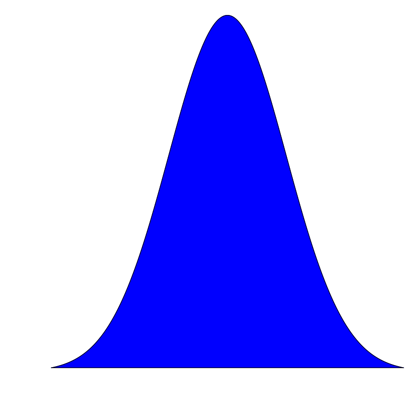
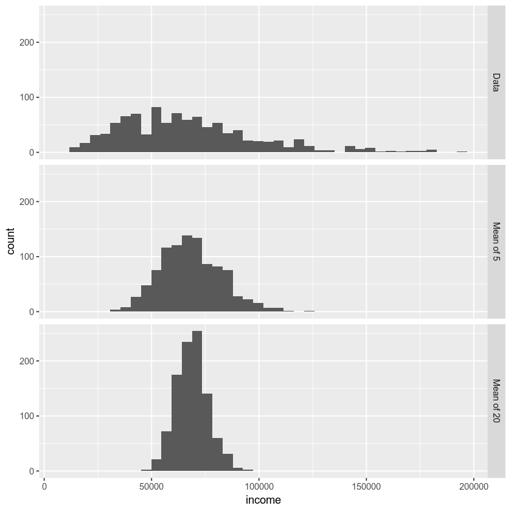
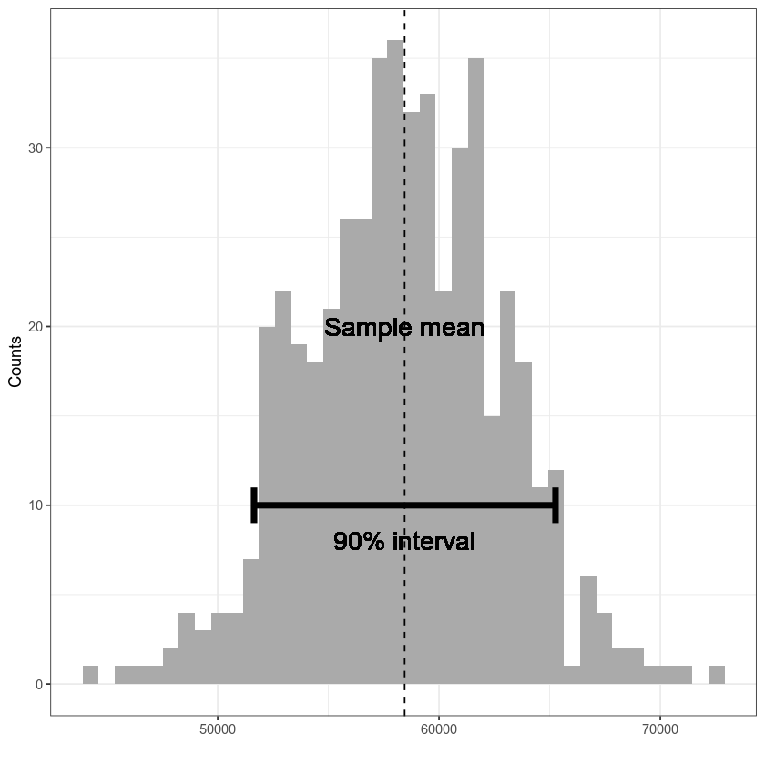
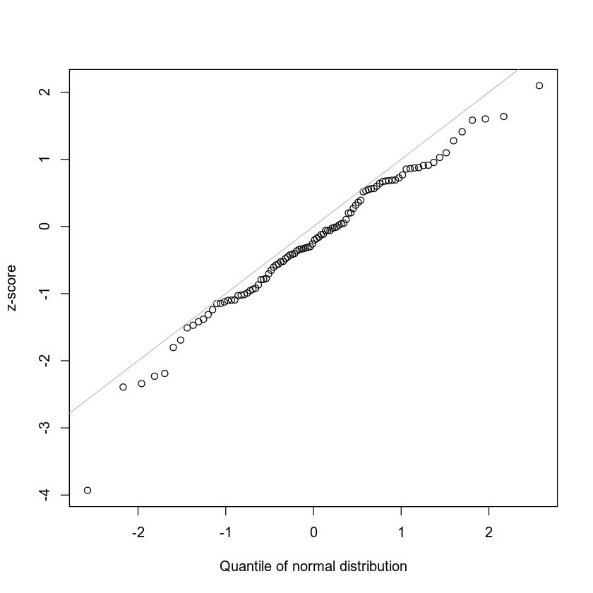
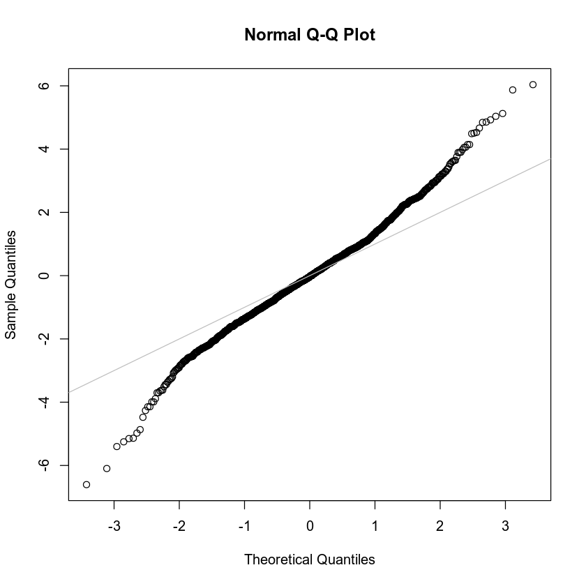

library(boot)
library(ggplot2)Chapter 2 - Data and Sampling Distributions
Practical Statistics for Data Scientists (R)
- 2019 Peter C. Bruce, Andrew Bruce, Peter Gedeck
Import required R packages.
Define paths to data sets. If you don’t keep your data in the same directory as the code, adapt the path names.
PSDS_PATH <- file.path(dirname(dirname(getwd())))
loans_income <- read.csv(file.path(PSDS_PATH, 'data', 'loans_income.csv'))
loans_income <- loans_income[, 1] # convert data frame to vector
sp500_px <- read.csv(file.path(PSDS_PATH, 'data', 'sp500_data.csv.gz'), row.names=1)Figure 2.1
x <- seq(from=-3, to=3, length=300)
gauss <- dnorm(x)
par(mar=c(3, 3, 0, 0)+.1)
plot(x, gauss, type='l', col='blue', xlab='', ylab='', axes=FALSE)
polygon(x, gauss, col='blue')
dev.off()
norm_samp <- rnorm(100)
par(mar=c(3, 3, 0, 0)+.1)
hist(norm_samp, axes=FALSE, col='red', main='')
dev.off()
null device: 1
null device: 1

Sampling Distribution of a Statistic
# take a simple random sample
samp_data <- data.frame(income=sample(loans_income, 1000),
type='data_dist')
# take a sample of means of 5 values
samp_mean_05 <- data.frame(
income = tapply(sample(loans_income, 1000*5),
rep(1:1000, rep(5, 1000)), FUN=mean),
type = 'mean_of_5')
# take a sample of means of 20 values
samp_mean_20 <- data.frame(
income = tapply(sample(loans_income, 1000*20),
rep(1:1000, rep(20, 1000)), FUN=mean),
type = 'mean_of_20')
# bind the data.frames and convert type to a factor
income <- rbind(samp_data, samp_mean_05, samp_mean_20)
income$type <- factor(income$type,
levels=c('data_dist', 'mean_of_5', 'mean_of_20'),
labels=c('Data', 'Mean of 5', 'Mean of 20'))ggplot(income, aes(x=income)) +
geom_histogram(bins=40) +
facet_grid(type ~ .)
The Bootstrap
As the calculation uses random samples, results will vary between runs
stat_fun <- function(x, idx) median(x[idx])
boot_obj <- boot(loans_income, R=1000, statistic=stat_fun)
boot_obj
ORDINARY NONPARAMETRIC BOOTSTRAP
Call:
boot(data = loans_income, statistic = stat_fun, R = 1000)
Bootstrap Statistics :
original bias std. error
t1* 62000 -75.8725 220.336Confidence Intervals
# R version for figure 2-9 not available
set.seed(5)
set.seed(7)
sample20 <- sample(loans_income, 20)
sampleMean <- mean(sample20)
stat_fun <- function(x, idx) mean(x[idx])
boot_obj <- boot(sample20, R=500, statistic=stat_fun)
boot_ci <- boot.ci(boot_obj, conf=0.9, type='basic')
X <- data.frame(mean=boot_obj$t)
ci90 <- boot_ci$basic[4:5]
ci <- data.frame(ci=ci90, y=c(9, 11))
# ci <- boot_ci$basic[4:5]
ci
ggplot(X, aes(x=mean)) +
geom_histogram(bins=40, fill='#AAAAAA') +
geom_vline(xintercept=sampleMean, linetype=2) +
geom_path(aes(x=ci, y=10), data=ci, size=2) +
geom_path(aes(x=ci90[1], y=y), data=ci, size=2) +
geom_path(aes(x=ci90[2], y=y), data=ci, size=2) +
geom_text(aes(x=sampleMean, y=20, label='Sample mean'), size=6) +
geom_text(aes(x=sampleMean, y=8, label='90% interval'), size=6) +
theme_bw() +
labs(x='', y='Counts')| ci | y |
|---|---|
| <dbl> | <dbl> |
| 51643.09 | 9 |
| 65262.95 | 11 |

Normal Distribution
Standard Normal and QQ-Plots
norm_samp <- rnorm(100)
qqnorm(norm_samp, main='', xlab='Quantile of normal distribution', ylab='z-score')
abline(a=0, b=1, col='grey')
Long-Tailed Distributions
nflx <- sp500_px[,'NFLX']
nflx <- diff(log(nflx[nflx>0]))
qqnorm(nflx)
abline(a=0, b=1, col='grey')
Binomial Distribution
dbinom(x=2, size=5, p=0.1)
0.0729
pbinom(2, 5, 0.1)
0.99144
dbinom(x=0, size=200, p=0.02)
0.0175879466057216